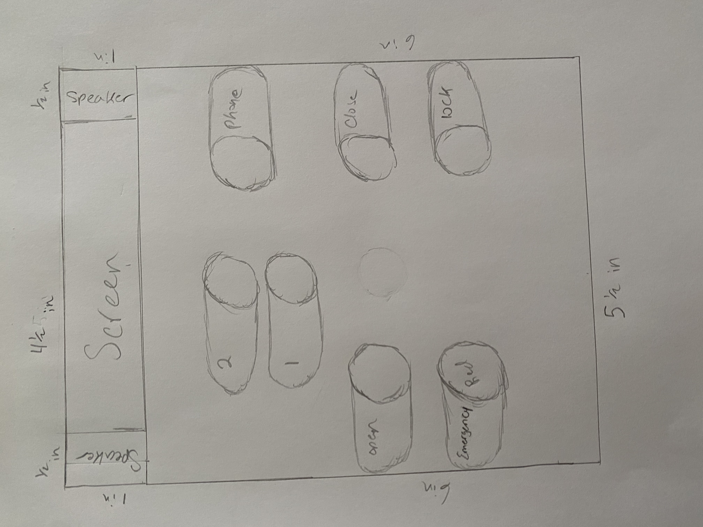

For Part B
Does the interface make doing common things easier?
- The interface makes the common things easier to accomplish because of how easy it is to distinguish some of the buttons.
- In the rarer cases, the interface is inconvient because of the location for the phone button on the elevator is hard to locate and the color for the emergency button is hard to distinguish between the other buttons
Think about how the user interacts with the elevator. What is the common sequence of actions?
- A common sequence of actions is to firt push the button to open the elevator.
- Next step is to push the button for the desired floor. The elevator should close, display what floor you are heading too, and play a tone to indicate its working.
- Finally, the elevator should play a tone upon arriving to the desired floor. The doors should open and then you can leave the elevator
How does the elevator support the user to figure out how to make it work?
- elevator has arrowrs to distinguish opening/closing doors
- The elevator has a display screen to indicate what floor you are going too
- The elevator has labels on the buttons to help the user choose the right button
How does the elevator provide feedback to the user?
The elevator provides feedback by:
- Playing a sound
- Lighting up a display and the button
- Closing/Opening the elevator door
What are some common mistakes you can make with this current design?
Some of the common mistakes you can make with this current design is:
- Accidentally clicking on the emergency button instead of the desired button
- Not being able to locate the phone button
- Mistaking the arrows that indicate the open and close button
Suggest the improvements to make on the control interface. Sketch your solution. And justify your design decisions

Some of the changes that are made:
- Screen added at the top to indicate any changes in the elevator
- Speakers added to the side of the screen to play sounds and for the phone button
- Phone butten moved to make it easier to locate
- Added words next to the buttons to make it easier to distinguish buttons
- Made elevator button red to distinguish between other buttons
.JPG)